← Índice de los 69 tutes de IDA
Tute 20 · Qué es una vulnerabilidad
se conecta con: IDA · Llamadas y pila · Flujo · Vulnerabilidades (defensivo)
INTRODUCCIÓN AL REVERSING CON IDA PRO DESDE CERO PARTE 20
________________________________________________________________________
Vulnerabilidades.
En esta parte veremos sobre el tema vulnerabilidades y cómo analizar algunas de las más simples.
Que es una vulnerabilidad?
En seguridad informática, la palabra vulnerabilidad hace referencia a una debilidad en un sistema permitiendo a un atacante violar la confidencialidad, integridad, disponibilidad, control de acceso y consistencia del sistema o de sus datos y aplicaciones.
Las vulnerabilidades son el resultado de bugs o de fallos en el diseño del sistema. Aunque, en un sentido más amplio, también pueden ser el resultado de las propias limitaciones tecnológicas, porque, en principio, no existe sistema 100% seguro. Por lo tanto existen vulnerabilidades teóricas y vulnerabilidades reales.
Lo mismo se aplica a programas, un programa vulnerable es el que tiene bugs o fallos de programación y según el tipo de bugs podrán ser explotados, llegando hasta ejecutarse código malicioso en dicho programa, pero también puede fallar la autenticación, y permitir acciones que no debería al usuario, provocar crashes, permitir elevar privilegios, etc.
Por supuesto a nivel de bugs de corrupción de memoria, los más sencillos son los buffers overflows.
Los mismos se producen cuando un programa reserva una zona de memoria o buffer para almacenar datos y por algún motivo no se chequea adecuadamente el tamaño de los datos a copiar y se desborda el buffer copiando más del tamaño reservado, pudiendo pisar variables, argumentos y punteros que se encuentran en la memoria.
STACK OVERFLOW.
El tipo más sencillo de buffer overflow es el stack overflow, que es cuando se produce un desborde en un buffer reservado en el stack.
En el código fuente de un programa sencillo en C un buffer puede ser
char buf[xxx];
Donde xxx es el tamaño del buffer en este caso es un buffer en el stack de 0x300 bytes de largo.
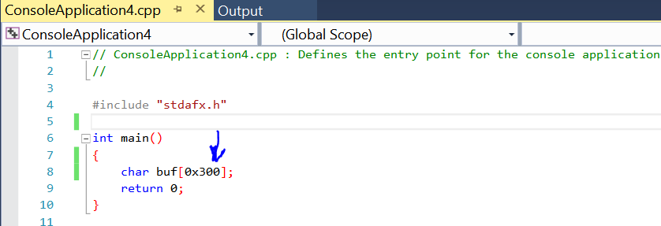
Evidentemente el programa no hace nada, pero lo compilamos y veremos en el IDA.
Esta adjunto como Compilado_1.exe.
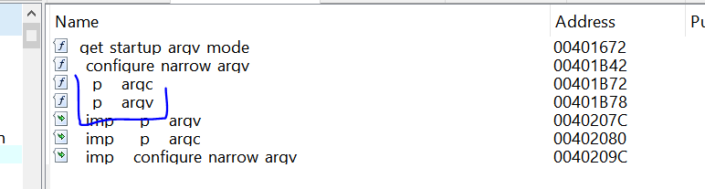
Ya habíamos visto que buscando las referencias de argc o argv llegábamos a la llamada al main en un programa de consola.
Haciendo doble click llego allí
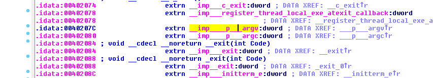
Y buscando las referencias con X.
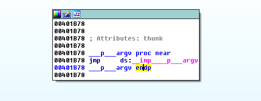
Buscando referencias llegamos al conocido bloque que llama al main en este caso le puso otro nombre quizás porque no hace nada.
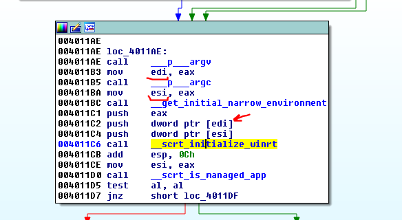
Si entramos a la función no reserva nada porque no usa el buffer, y vuelve devolviendo cero en EAX.
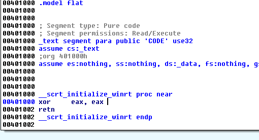
Deberemos usar el buffer para que termine de reservar espacio.
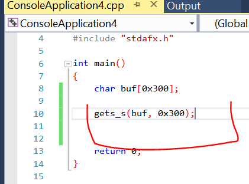
Ahora utilizamos la función gets_s para que el usuario tipee algo en la consola y se guarde en el buffer con lo cual ya lo estamos utilizando.
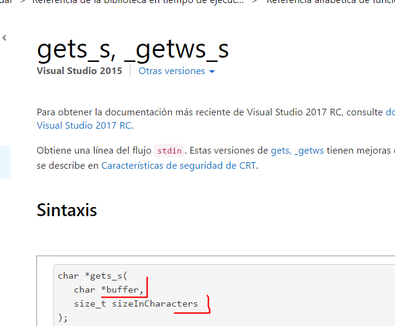
Vemos que dicha función tiene dos argumentos el buffer y el tamaño máximo de lo que podes tipear, para que no se desborde, obviamente en el ejemplo no hay overflow porque el size que copia no es mayor que el del buffer creado de 0x300.
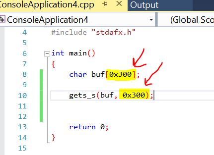
Vemos que no hay posibilidad de overflow, mientras que lo que se copie no desborde los 0x300 bytes reservados estará todo bien, mientras que ingreses menos o igual que 0x300.
Veámoslo en el IDA este estará adjunto como Compilado_2.exe.
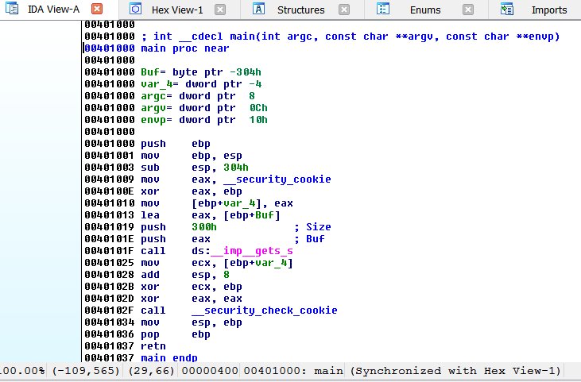
Lo compile con símbolos y IDA también encontró los símbolos en mi maquina ya que yo lo compile.
Se ve mucho mejor, ya aparecen el main con sus argumentos y variables.
Analicemos un poco en el IDA, reverseando.
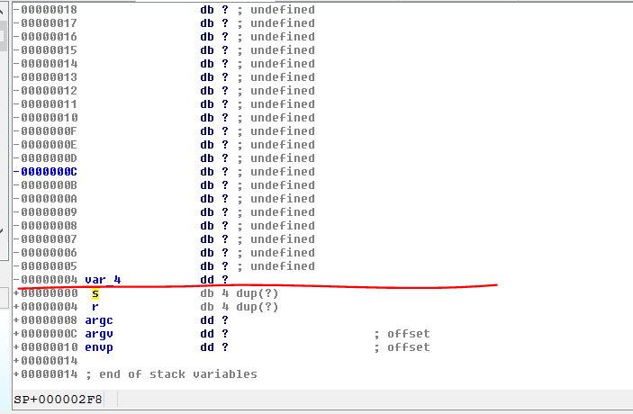
Haciendo doble click en cualquier variable o argumento vamos a la representación estática del stack.
Vemos los tres argumentos envp, argv y argc que no los usamos dentro de main.
Los mismos se colocan en el stack al pushearlos antes de llamar al main.
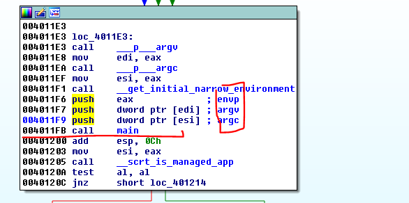
Eso ubica los tres argumentos en el stack antes de hacer el CALL main.
Este guarda el RETURN ADDRESS que es la dirección que guarda para saber dónde debe volver al salir del CALL, en este caso el return address tendrá el valor 0x401200 si no hay randomizacion.
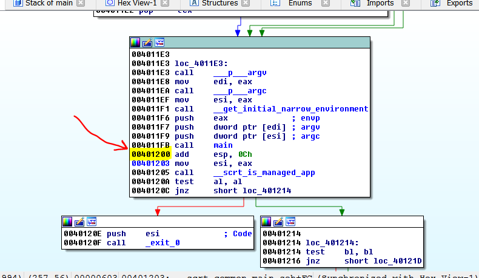
Allí volverá al terminar de ejecutar el main, así que debe guardar ese valor 0x401200 en el stack justo arriba de los tres argumentos.
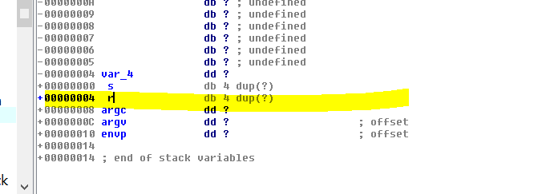
Luego ya empieza a ejecutar el main lo primero es el PUSH EBP.
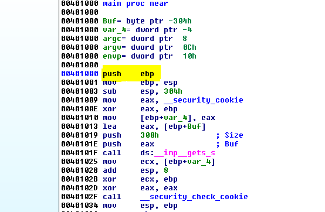
Eso guarda en el stack el valor de EBP que utilizaba la función que llamó al main, justo arriba del RETURN ADDRESS 0x401200, no sabemos qué valor tendrá porque cambia con la ejecución, pero es el EBP guardado o STORED EBP de la función padre de esta.
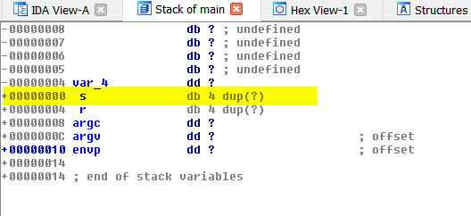
Allí estará guardado en el stack arriba del return address.
Lo siguiente que se ejecuta es.
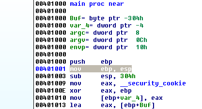
Donde pone EBP como base en esta función igualándolo con ESP, esto es un MOV solo cambia el valor de EBP, no el stack.
Luego la siguiente instrucción sub esp, 0x304 mueve ESP hacia arriba reservando espacio para las variables locales y buffers en el stack, que se ubican encima del STORED EBP y ESP quedara trabajando en una función basada en EBP, justo arriba del espacio reservado.
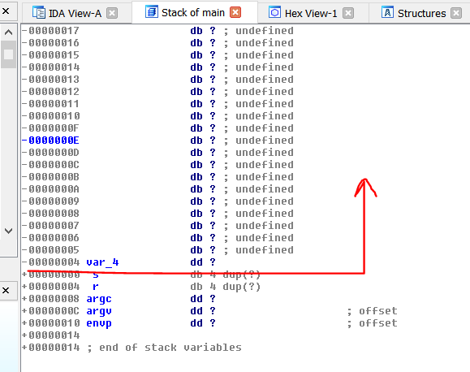
Allí vemos el espacio reservado para variables y buffers, justo arriba de la s (STORED EBP).
La primera variable que casi siempre se encuentra es el CANARY de protección del stack, en este caso se llama var_4.
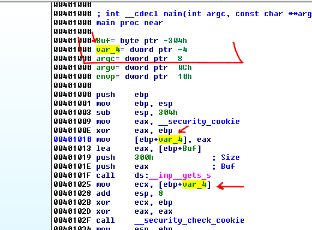
Allí vemos que lee el valor de _security cookie que es un valor random que se crea diferente cada vez que se ejecuta el programa lo XOREA con EBP y lo guarda en la variable var_4 como ya habíamos visto, la renombramos a CANARY.
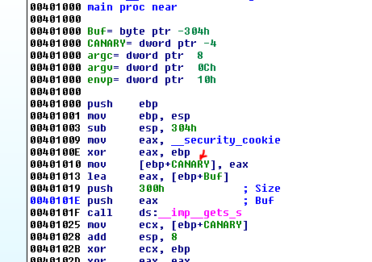
Vemos que arriba de CANARY esta Buf veámoslo en la representación estática del stack.
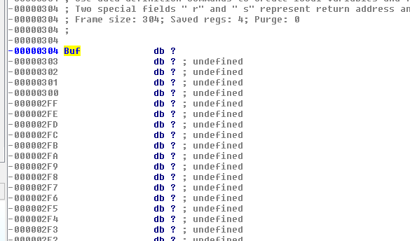
Cuando veo espacio vacío en la representación estática posiblemente haya un buffer, así que hacemos click derecho en Buf y elegimos ARRAY.
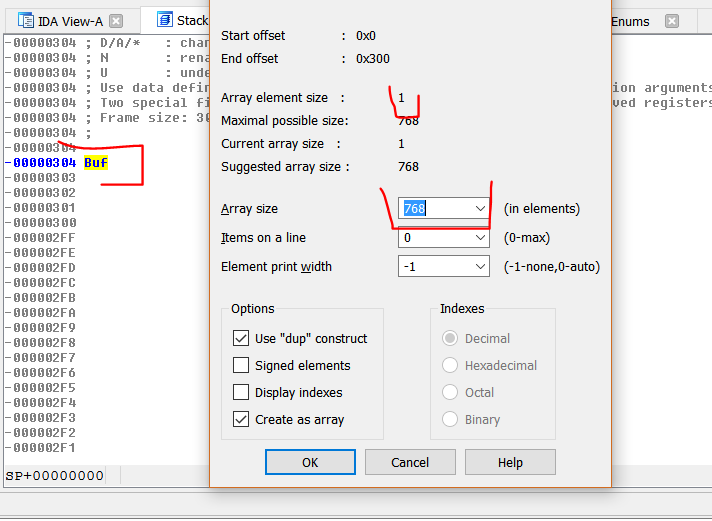
Vemos que el largo es de 768 por 1 que es el size de cada elemento, por lo tanto el tamaño del buffer es 768 que en hexadecimal es 0x300.
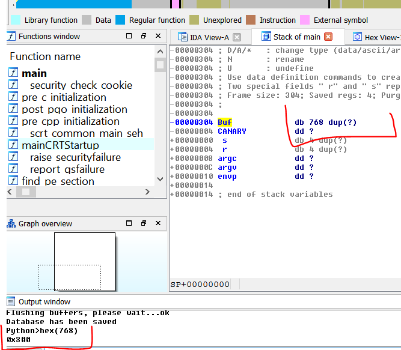
Así que aceptamos y queda el Buf ya definido como un buffer de 0x300 bytes hexa o 768 decimal.
Allí vemos la llamada a gets_s, el size máximo 0x300 y el otro argumento es la dirección del buffer que se obtiene mediante el LEA.
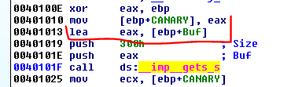
Así que verificamos que el size del Buf era 0x300 y copia al mismo 0x300 como máximo que se pasa a gets_s.
Es obvio que si pudiéramos haber desbordado el buffer copiando más de 0x300 hubiéramos pisado el CANARY el STORED EBP y el RETURN ADDRESS que están justo debajo del BUFFER.
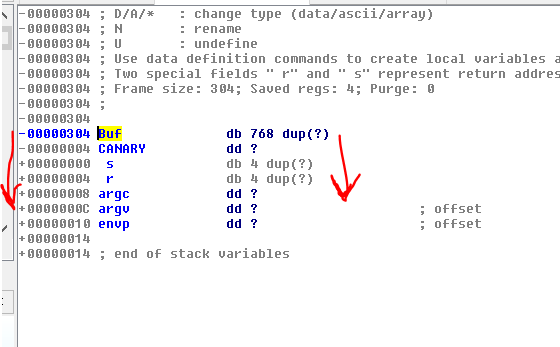
Pero no es el caso este es un buen ejemplo de un buffer que se escribe en forma correcta.
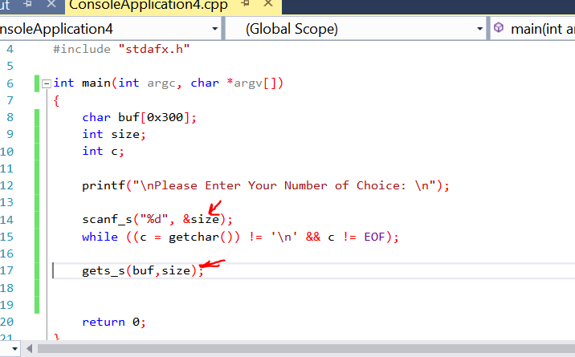
Obviamente muchas veces se le da al usuario o se ingresa de alguna manera el tamaño de los datos que van a copiarse, si es así debería chequearse bien que ese size no sea mayor que el tamaño del buffer.
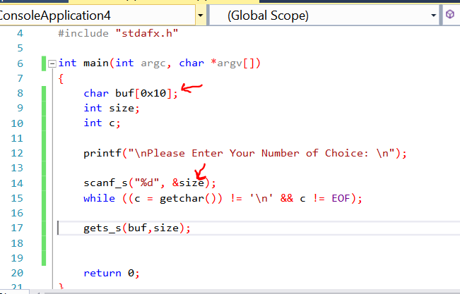
Allí vemos un buffer de 0x10 bytes o sea 16 decimal y se le da la posibilidad al usuario de que tipee el size de lo que va a copiar en el gets_s obviamente no hay ningún chequeo ni nada del máximo de ese valor, por lo cual si lo compilo y lo ejecutó (Compilado_3.exe).
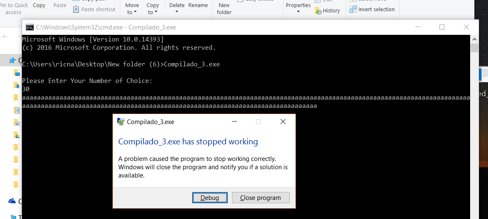
Vemos que ahí hay un BUG y que el programa es vulnerable si lo abrimos en IDA, aun si no tuviéramos el código fuente.
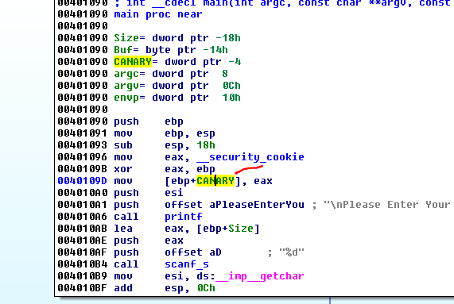
Igual que antes está el CANARY, justo arriba está el Buf, veamos el largo del mismo en la representación del stack.
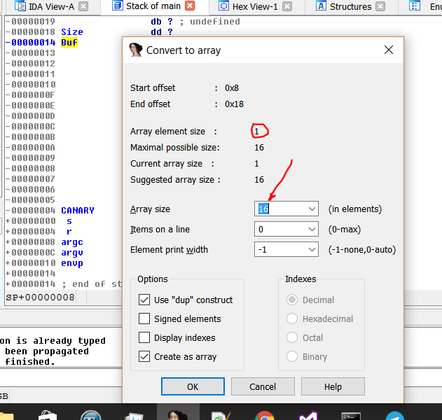
El largo del Buffer es de 16 bytes por 1 que es el largo de cada elemento, o sea que es 0x10 hexa.
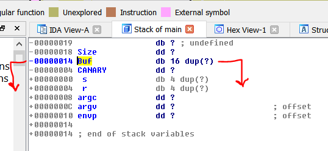
O sea que si se puede copiar más de 16 bytes en el buffer desbordara y pisara el CANARY, STORED EBP y el RETURN ADDRESS.
Veamos la variable size.
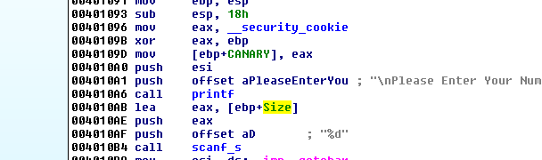
Vemos que luego de imprimir con printf el mensaje Please enter Your Number, llama a scanf_s para ingresar un número por teclado, el cual se guarda en la variable size la cual es un dword y se le pasa la dirección de la variable con el LEA.
Veamos la función scanf_s.
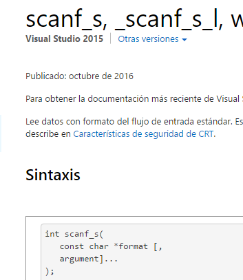
La función scanf_s lee datos del flujo de entrada estándar stdin y escribe los datos en la ubicación que se proporciona en argument. Cada argument debe ser un puntero a una variable de un tipo que se corresponda con un especificador de tipo en format. Si la copia tiene lugar entre cadenas que se superponen, el comportamiento es indefinido.
O sea que es como lo opuesto a printf en vez de imprimir con un formato, ingresa de consola con un formato a un Buffer, en este caso el formato es “%d” por lo cual se interpreta como un número decimal.
De esta forma cuando llama a gets_s usando ese size que se tipeo, copiara esa cantidad de bytes y si es mayor a 0x10 desbordara.
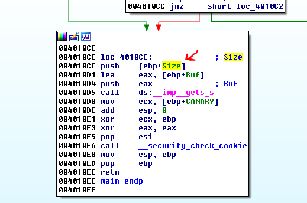
Una posible solución seria chequear el largo del size antes de copiar.
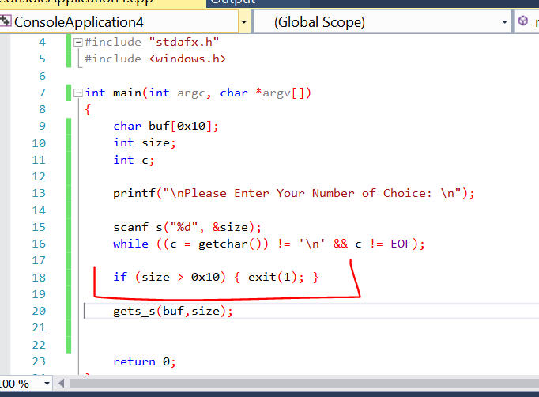
Estaría bueno que analicen si esta solución hace que no sea vulnerable o aún lo es, analícenlo se llama VULNERABLE_o_NO.exe y lo discutiremos en la parte siguiente.
Hasta la próxima parte 20.
Ricardo Narvaja